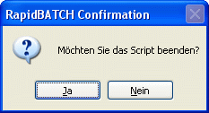

CONFIRM
CONFIRM
CONFIRM
CONFIRM
| Syntax: | CONFIRM Auswahl = Meldungstext |
| Beschreibung: | Die CONFIRM-Funktion ist eine Abkürzung für ein Meldungsfenster mit JA-NEIN-Option. Drückt der Benutzer JA, so gibt die Funktion den Wert 0, andernfalls -1 zurück.  |
| Beispiele: | repeat confirm [quit] = 'Möchten Sie das Script beenden?' until [quit] = [true] echo 'Script beendet.' end |
| Bemerkungen: | Der Standard-Text für die Titelzeile von CONFIRM-Meldungsfenstern kann über die Variable [Confirm_Title] geändert werden. Verwenden Sie die MSGBOX-Anweisung, um ein individuell gestaltetes Messagebox-Fenster bereitzustellen. |